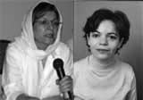

پذيرش > سایت نوشته ها > گفتگوی منیره برادران با خدیجه مقدم
 با فعالان کمپین با فعالان کمپین

 گفتگوی منیره برادران با خدیجه مقدم گفتگوی منیره برادران با خدیجه مقدم
21 اردیبهشت 1387 - شبکه همبستگی زنان - نسخه قابل چاپ
منیره برادران: خانم مقدم شما از فعالان جنبش محیط زیست، کمپین یک میلیون امضا، کمیته مادران و مادران صلح هستید. مایل هستیم با فعالیتهای شما در این زمینه ها بیشتر آشنا شویم. از فعالیت هایتان در حوزه حفظ محیط زیست شروع کنیم. اگر اشتباه نکنم شما از بنیانگذاران جنبش زنان طرفدار محیط زیست در ایران هستید. برایمان بگوئید از چه زمانی این کار را شروع کردید و انگیزه تان برای وارد شدن در این حوزه چه بود؟
خدیجه مقدم: فعالیت های محیط زیستی در ایران به صورت یک تشکل غیردولتی را ، خانم دکتر مه لقا ملاح که در حال حاضر با داشتن ٩١ سال سن، همچنان پرشورفعالیت می کنند و به واقع مادر طبیعت ایران نام گرفته اند ، بنیان گذاشتند، و جمعیت زنان مبارزه با آلودگی محیط زیست را در سال ١٣٧٤ به ثبت رساندند. من هم که علاقمند به محیط زیست بودم و در این زمینه مطالعه می کردم ، در سال ١٣٧٥ عضو جمعیت شدم . یادم می آید در سال ١٣٧٢ برای نشست ٨ مارس دوستانهء خودمان، من مقاله ای تهیه کرده بودم در مورد فعالیت های زنان جهان برای حفظ محیط زیست و اتفاقا سال ١٣٧٤ در همین محفل هم بود که از تشکیل جمعیت زنان مبارزه با آلودگی زیست با خبر شدم و بلافاصله بعد از تعطیلات عید نوروز عضو جمعیت شدم و به دلیل اینکه با جان و دل کار می کردم، در سال ١٣٧٦ در انتخابات مجمع عمومی به عنوان عضو هیئت مدیره انتخاب شدم که هیئت مدیره هم مرا به عنوان رئیس هیئت مدیره انتخاب کرد ، سال های زیادی در جمعیت با سمت های مختلف ، مسئول روابط عمومی - دبیر و بازرس، خدمت کردم ولی بعد که از حالت دموکراتیک خارج شد وبه صورت هیئت امنایی اداره شد در هیچ انتخاباتی شرکت نکردم اما به عنوان یک عضو ساده در همه فعالیت های مردمی جمعیت مان هستم. جمعیت ما، در ١٢ استان شعبه ثبت شده دارد و زنان و مردان زیادی در آن مشغول فعالیت های محیط زیستی هستند و بیشتر به فعالیت های آموزشی می پردازند.
انگیزه من برای وارد شدن در این حوزه عشق به طبیعت و عدالت بود. چون با حفظ محیط زیست عدالت بین نسل ها هم بر قرار می شود. در سال ١٣٧٧ اولین تعاونی زیست محیطی زنان را در ایران با کمک دوستانم تشکیل دادیم که بتوانیم علاوه بر کارهای آموزشی، برای زنان بویژه زنان محروم، ایجاد اشتغال بکنیم و تولید کالاهای سازگار با محیط زیست را هم رواج دهیم . چون اولین گام برای حفظ محیط زیست فقر زدایی است و یکی از راه های کاهش فقر، ایجاد تعاونی های زنان است که در مناطق فقیر نشین حداقل از فقر مطلق به فقر نسبی برسند والبته این امکان پذیر نیست مگر با کمک دولت. من طرحی داشتم به نام " خانه های اشتغال زنان " که پایداری طرح تشکیل یک تعاونی زنان بود و توانستیم با اجرای این طرح ٤ تعاونی زنان سرپرست خانوار در اسلامشهر- کیانشهر - ناصرخسرو و کوی ١٣ آبان و یک خانه اشتغال در خانی آباد، ایجاد کنیم که در واقع یک الگو بود و قرار بود در سطح کلان با کمک وزارت تعاون، شهرداری و وزارت رفاه اجرا بشود و شبکه ای از این تعاونی ها هم به وجود بیاید، حتی شبکه را هم به ثبت رساندیم با همکاری تعداد زیادی از تعاونی های زنان استان تهران ولی متاسفانه بعد از سال ها تلاش شبانه روزی، دولتمردان و دولتزنان جدید حمایت نکردند و کار متوقف شد البته در حال حاضر به جز تعاونی زنان سبز تهران در کیانشهر که مکان را شهرداری منطقه از زنان سرپرست خانوار باز پس گرفت ، بقیه مشغول فعالیت هستند و اندک درآمدی دارند.
منیره برادران: آیا از این نوع حرکتهای محیط زیستی در جامعه استقبال می شد؟ یا اینکه این دید وجود داشت - شاید هنوز هم - که مسئله محیط زیست با این همه مشکلات زنان، موضوعی «لوکس» است؟
خدیجه مقدم: با آگاهسازی هایی که توسط هواداران محیط زیست درجامعه صورت می گرفت مردم خوب استقبال می کردند ولی مسولان از آن به عنوان یک کالای ابزاری لوکس استفاده کردند. یعنی حرف های قشنگ می زدند ولی عمل نمی کردند. باز در دولت قبلی اوضاع بهتر بود در دولت فعلی که سازمان حفظ محیط زیست ما به جای جلوگیری از تخریب ها و آلودگی های محیط زیست و یا آموزش مردم برای حفظ محیط زیست قرداد با سیرک های خارجی منعقد می کند و در پارک پردیسان سیرک برگزار می کند. وضع محیط زیست ما در حال حاضر فاجعه است. تلافی همه مشکلات را هم سر درختان در می آورند. مشکل ترافیک، نا امنی شهر، مبارزه با مواد مخدر، کمبود مسکن را با تخریب جنگل ها می خواهند حل کنند. مثلا جنگل لویزان را که ریه شهر تهران است را تخریب می کنند چون مشکل ترافیک منطقه را برطرف کنند، از جنایاتی که در جنگل لویزان اتفاق افتاده جلوگیری کنند، جای معتادان را با جاده و ماشین پر کنند که ریشه اعتیاد از بین برود. اینها حرف هایی بود که شهرداری برای توجیه عمل غیرقانونی خود به مردم منطقه زده بود.
منیره برادران: تشکلی که در این رابطه ایجاد شد، هنوز هم پابرجاست؟
خدیجه مقدم: بله، ظاهرا جمعیت زنان مبارزه با آلودگی محیط زیست پا برجاست ولی فعالیت زیادی نمی توانیم بکنیم. بیش از ٤٠٠ تشکل محیط زیستی که در دوران آقای خاتمی به وجود آمد، بیشتر آنها را جوان ها تشکیل داده بودند ولی اکثرا سر خورده شدند و در حال حاضر تعداد تشکل های فعال از تعداد انگشتان دست هم کمتر است. ببینید وقتی به مردم آموزش داده می شود که مثلا زباله هایتان را جدا سازی کنید و تفکیک شده به مامورین شهرداری تحویل بدهید و فواید بهداشتی، محیط زیستی و اقتصادی آنرا توضیح داده می شود، آنها هم علاقمند به مشارکت در این زمینه می شوند و بعد شهرداری طبق وعده ای که داده، عمل نمی کند و زباله ها را بعد از تفکیک، یکجا می ریزد و می برد . یا مثلا روزی را که مشخص کرده برای جمع آوری زباله خشگ نمی آید، مردم دلسرد می شوند. هم هواداران محیط زیست که این آموزش ها را داده اند و هم مردم که همکاری کرده اند. بطور کلی الان که هیچ ارتباطی بین سازمان های هوادار محیط زیست با دولت وجود ندارد که کاری پیش برود. فریادها هم که به جایی نمی رسد. همان طور که می دانید تشکل های غیردولتی محیط زیستی ، دو نقش ایفا می کنند یکی اینکه به دولت کمک می کنند تا فرهنگ جامعه ارتقا پیدا کند. دیگر اینکه بر کارهای دولت نظارت می کنند و اگر جایی خلاف قانون اساسی اقدامی صورت بگیرد و باعث تخریب طبیعت شود، به حکومت فشار می آورند و از اقدامات ضد محیط زیستی جلوگیری می کنند. با اینکه در قانون اساسی ما دو اصل برای حفظ محیط زیست وجود دارد ولی هیچ تعاملی بین تشکل ها ی غیر دولتی محیط زیستی و دولت وجود ندارد، حتی برای یک تجمع محیط زیستی هم مجوز نمی دهند و هر حرکتی را سرکوب می کنند ، فکر می کنید این تشکل ها می توانند رشد کمی و کیفی داشته باشند .
منیره برادران: چه شده که توجه تان به مسائل زنان جلب شد و از چه زمانی شما در این میدان فعال هستید؟
خدیجه مقدم: من هم مثل همه با تبعیض ها بزرگ شده ام. از همان کودکی که بین من و برادرم فرق می گذاشتند مثل خیلی ها متوجه شدم که باید مبارزه کنم و حق ام را بگیرم حتی برای گرفتن این حق در عالم بچگی همیشه ادای پسر ها را در می آوردم ، بازی های پسرانه که آن روز ها پسرانه بود مثل فوتبال و کشتی و دوچرخه سواری و شمشیر بازی با خط کش مدرسه را خیلی دوست داشتم البته اینرا بگویم ، ما بخاطر شرایطی که داشتیم چون در یک کمپ سازمانی زندگی می کردیم ، در مدرسه مختلط درس می خواندیم و همبازی های ما پسر ها هم بودند و طبیعی است وقتی تو با پسر ها و دخترها درس می خوانی و بازی می کنی و رشد می کنی زود می فهمی که فرقی با پسرها نداری و اگر کمی هم درسخوان باشی ، خودت را شایسته تراز برادرت هم می دانی و تبعیض ها بیشتر اذیتت می کند ولی یک اعتماد بنفسی هم پیدا می کنی که هیچ کس نمی تواند تا پایان عمرت آنرا از تو بگیرد . یادم می آید وقتی در دوران شاه اعتصاب های سراسری شروع شده بود، من در سازمان آب کار می کردم و تعداد کارکنان هم خیلی زیاد بود ، شورای کارکنان تشکیل دادیم که ١٥ نفر کارمند و ١٥ نفر کارگر بودند. ٢٩ نفر مرد بودند و من تنها زنی بودم که در شورای کارکنان انتخاب شده بودم . جالب اینکه آقای مهندس کاشانی پسر آیت اله کاشانی هم خودشان را کاندید کرده بودند. اولین رای را آقای اسفندیار نوایی که یادشان گرامی باد، آوردند و من با اینکه زن جوان ٢٦ ساله ای بودم، دومین رای را آوردم، مهندس کاشانی بعد از ١٠ نفراول در بین ١٥ نفر کارمند انتخاب شدند. ولی بعد از پیروزی انقلاب ایشان شدند مدیرعامل سازمان آب و ما یکی یکی بیکار شدیم .
من در سازمان آب به مسائل زنان کارگر می پرداختم، شورای زنان کارگر تشکیل دادیم، نشریه داشتیم، کلاس سواد آموزی، مهدکودک درست کردیم و کارهایی انجام دادیم ولی خیلی به قوانین تبعیض آمیز توجه نداشتیم . و با کمال شرمندگی وقتی زنان برای اعتراض به حجاب در دانشگاه تهران جمع شدند من رفته بودم که به دوستانم بگویم این کارها را نکنید مساله ما الان حجاب نیست مساله ما استقلال و آزادی و عدالت اجتماعی است . راستش من از طریق نشریات زنان و کتاب ها یی که تقریبا از سال های ٧٠ کم و بیش منتشرمی شدند با دیدگاه های فمینستی آشنا شدم، بعد با نوشین احمدی خراسانی که او هم عضو جمعیت زنان مبارزه با آلودگی محیط زیست بود آشنا شدم و به صورت داوطلبانه در نشریاتی که به کوشش او منتشر می شد گاهی مقاله می نوشتم، با زنان کارگر مصاحبه می کردم و هر کمکی که در بضاعتم بود انجام می دادم و خودم هم می آموختم .
منیره برادران: لطفا از کارتان در ایجاد فرهنگسرا در بم بگوئید. این طرح تا کجا پیش رفته است؟ با چه مشکلاتی در این زمینه مواجه بودید؟
خدیجه مقدم: نمایندگان ٤٤ تشکل غیر دولتی زنان و نهاد مدنی ، بعد از زلزله فاجعه بار بم دور هم جمع شدیم تا به زنان بم کمک کنیم. قرار بر این شد که کمک های فوری را هر تشکلی خودش سازماندهی کند تا زودتر به مردم بم برسد. کمک های میان مدت مثل ایجاد کتابخانه ، خیاطخانه ، مهدکودک ، آرایشگاه وغیره با همکاری چند تشکلی که داوطلب هستند انجام بشود و کمک بلند مدت هم ، کمک به بازسازی بم باشد و فرهنگسرایی برای زنان بم ایجاد شود. البته همه این ها با جلسات متعدد بحث و بررسی میدانی و نظر سنجی از زنان بم صورت گرفت که مشکلاتی زیادی هم داشت. از بین نمایندگان تشکل ها ١١ نفر هیئت اجرایی انتخاب شدیم و مسئولیت به عهده گرفتیم البته در حال حاضر ٣ نفر بطور جدی کار می کنیم، بقیه به دلیل مشکلاتشان که در واقع همان نقش های چندگانه زنان است نتوانستند خیلی با ما همراهی کنند، البته هر کدام در مقطعی. از خانم عبادی هم که تازه جایزه صلح نوبل نصیب شان شده بود خواهش شد که حسابی به نام خودشان باز کنند و در واقع ما از حسن شهرت ملی و بین المللی خانم عبادی برای کمک به زنان بم اسثفاده کردیم . با تلاش های زیاد ، زمینی به وسعت یک هکتار از شهرداری بم گرفتیم و به رغم مشکلات فراوانی که داشتیم، این فرهنگسرا ساخته شد. البته ٩٠ در صد طرح اجرا شده که امیدواریم بتوانیم این پروزه را به اتمام برسانیم. مشکلاتی داشتیم که باعث به تعویق افتادن کارمان می شد. مثلا ماه ها صبر کردیم تا طرح جامع شهر بم طراحی و بعد تصویب شود، البته دائم با زنان بم در این فاصله، در ارتباط بودیم ؛ برای تصفیه آب اردوگاه ها، کمک به مجروحین، کمک به خانواده ها، برای راه اندازی خیاطخانه ها، آرایشگاه ها و خیلی کارهای دیگر. بعد انتخاب طرح بود که با وسواس زیادی آنرا انجام دادیم، ماهها طول کشید ولی فرهنگسرای زنان بم یکی از زیباترین ساختمان های بم شد و چون طرح استثنایی بود برای اجرای آن زمان زیادی مصرف شد .
٣٦٠ میلیون تومان پول جمع شد، ١٢٠٠ متر مربع بدون محوطه سازی باید بنا ساخته می شد، خیلی تلاش کردیم تا کمک های نقدی و غیر نقدی از افراد خیر بگیریم و این کار در شرایطی که بم فراموش شده کار بسیار سختی است که هنوز هم داریم انجام می دهیم. بعد از اتمام ساختمان باید فرهنگسرا تجهیز شود، زنان بم منتظر اتمام ساختمان فرهنگسرا هستند. ما می توانیم بعد از اتمام ساختمان همان طور که از ابتدا تصمیم داشتیم فرهنگسرا را به شورای شهر بم و تشکل های زنان بم تحویل دهیم ولی چون می دانیم تجهیز این فرهنگسرا هزینه زیادی لازم دارد و از شرایط مالی شهرداری و شورای شهر بم هم مطلع هستیم در صدد تجهیز آن نیز به کمک دوستان هستیم. در حال حاضر مشکل عمده ما مشکل مالی است .
منیره برادران: برویم سر جنبش یک میلیون امضا. امروز، بعد از نزدیک به دو سال از شروع این جنبش، آن را چگونه ارزیابی می کنید؟
خدیجه مقدم: ارزیابی من از جنبش یک میلیون امضا بسیار مثبت است. برخی از دوستان به من انتقاد می کنند که تلاش صد ساله زنان را نادیده می گیرم و می گویم کمپین بهترین حرکتی بوده که تا کنون برای احقاق حقوق زنان انجام شده است. من منظورم از روش گفتگوی چهره به چهره کمپین است که تا کنون به این روش ما کار نکرده بودیم. در هر طرحی، جمعیت هدف ما عده ای محدود بودند ولی در این طرح کار اصلا تمامی ندارد. همیشه و در هر حالی اگر خودت بخواهی می توانی به آموزش و گفتگو با مردم بپردازی. در کوچه، تاکسی، اتوبوس، صف نانوایی، دانشگاه، ورزشگاه، مطب پزشک،...
در این مدت یکسال و هفت ماه درست است که خیلی هزینه داده ایم ولی به نظر من دستاوردمان خیلی خیلی بیش از هزینه آن بوده است، به راحتی ما با همه مردم با هر سطح سوادی می توانیم درباره قوانین تبعیض آمیز حرف بزنیم. بهمین دلیل هم حقوق زنان اینقدر عمومی شد و در سطوح مختلف حکومتی هم مطرح شده و تغییر قوانین تبعیض آمیز حتی توسط برخی از مسولان کشور هم، یک ضرورت عنوان می شود . جالب است وقتی مرا ٢٠ فروردین همین امسال یعنی چند روز پیش دستگیر و به بازداشتگاه وزرا بردند بعد از آن همه برخورد تندی که آقایان با من کرده بودند پس از تحویل من، زنان پلیس وقتی مرا دیدند، هر کدام به نوعی می گفتند که: "من میدان ٧ تیر نبودم " یعنی ما آن زنان پلیسی که زنها را کتک زدند نیستیم. یکی می گفت من آنوقت حامله بودم. یکی می گفت من جای دیگری کار می کردم دیگری می گفت من اصلا آنموقع پلیس نبودم خلاصه وقتی هم که می خواستند سلول را قفل کنند با ناراحتی گفتند که ما خجالت می کشیم، شما به خاطر ما تلاش می کنید ما باید در را بر شما قفل کنیم. یا مثلا در اوین هر کسی از من می پرسید برای چه شما را آورده اند می گفتم به خاطر دفاع از حقوق زنان. با خنده می پرسید، کمپین؟ خوب این نشان می دهد که چقدر این حرکت مردمی است و می شود در همه جا از خواسته های کمپین صحبت کرد و خوب ارتباط برقرار کرد.
منیره برادران: اشکال و فعالیتهایی از درون حرکت یک میلیون امضا ایجاد شده است مثل کمیته مادران یا تلاش شما برای منعکس کردن بیعدالتیها در اعدام زنان محروم. به نظر شما آیا این حرکت جوان قادر است این اشکال متنوع را همزمان پیش برد؟
خدیجه مقدم: معمولا وقتی حرکتی شروع می شود بعد از مدتی، برای ادامه حرکت نیاز به گسترش یا محدود کردن بخشی از فعالیت ها احساس می شود. نیاز به کمیته ای برای حمایت از کمپینی های دستگیر شده وقتی احساس شد که دستگیری ها شروع شد. البته قبلا یک کادر پشتبانی وجود داشت که اگر برای اعضا مشکلی پیش بیاید، تلاش کند تا مشکل برطرف شود ولی کمیته مادران برای حمایت از جوان ها ایده بهتری بود. یکی از مهمترین دستاورد های جنبش زنان، همین نهاد سازی در جامعه مدنی است. کمپین یک میلیون هم یکی از دستاوردهای جنبش زنان است که بعد از تشکیل" گروه هم اندیشی زنان " شکل گرفت، نه اینکه هم اندیشی کمپین را به وجود آورده باشد. هم اندیشی زنان ارتباط بین زنان فعال را بیشتر کرد و بعد تعدادی حرکت کمپین را به وجود آوردند و دوباره کمپین ارتباط را بین زنان بیشتر کرد کمیته مادران کمپین در درون کمپین شکل گرفت. ارتباط های مادران کمپین با زندانیان عادی یا دانشجویی و کارگری بیشتر شد مادران صلح شکل گرفت نه اینکه گروه مادران صلح را کمپین به وجود آورده باشد، همه اینها دستاورد های جنبش زنان است و قرار نیست کمپین همه حرکت ها را پیش ببرد. کمپین خواسته هایش مشخص است، روش کارش هم مشخص ولی اعضا کمپین فعالیت های دیگری هم دارند و خودشان تشخیص می دهند که چقدر برای هر کدام وقت بگذارند و نسبت به شرایطی که در جامعه پیش می آید موضع گیری کنند. کمپین فقط به دنبال برابری خواهی است و اتفاقا رمز موفقیت اش هم همین است که توانسته گروه های وسیعی از زنان با گرایش های مختلف را جذب کند.
منیره برادران: رابطه جنبش مادران صلح را، که شما از بنیانگذاران آن هستید، با کمپین یک میلیون امضا چگونه می بینید؟
خدیجه مقدم: در بیانیه اعلام موجودیت" فروم مادران صلح" آمده است که ما بهر آنچه امنیت سیاسی ، اقتصادی و اجتماعی کشورمان را به خطر بیاندازد اعتراض داریم و خواستار صلح و حقوق بشر هستیم. بله صلح و حقوق بشر دو مقوله جدایی ناپذیرند. وقتی ما، در مادران صلح به دنبال صلح و حقوق بشر هستیم، رابطه مان با کمپین مشخص می شود، یعنی با حرکت صلح آمیز و مدنی کمپین که به دنبال حقوق زنان که همان حقوق بشر است موافقیم و از این حرکت پشتیبانی می کنیم و این حمایت را همیشه نشان داده ایم. همه مادران صلح کمپین را امضا کرده اند ولی بجز تعداد اندکی، از فعالان کمپین نبوده و نیستند. بهر حال هر حرکتی عده ای را به خود جذب می کند. اعضا مادران صلح از فعالان اجتماعی و سیاسی گرفته تا کسانی که اولین فعالیت اجتماعی شان هست درکنار هم با صبر و حوصله مسائل مربوط به صلح و حقوق بشر را بررسی می کنند و هر کمکی از عهده شان بر بیاید برای امنیت جامعه انجام می دهند. و در مدت شش ماهی که از اعلام موجودیت آنان گذشته جایگاه خاصی در جامعه ایران و جهان پیدا کرده اند.
منیره برادران: به نظر شما زنان فعال مقیم خارج از کشور چه نقشی را میتوانند برای به پیش بردن مقاصد و مطرح شدن مطالبات جنبش زنان ایران ایفا کند.
خدیجه مقدم: به نظر من یکی از دلایل قوی شدن جنبش زنان ایران، فعالیت زنان ایرانی مقیم خارج از کشور هم هست که صدای ما را به جهانیان خیلی خوب و آبرومندانه رسانده اند. در واقع زنان میهن پرست و برابری خواه، هر جا که باشند چه در داخل و چه خارج کشوربا هم این جنبش را پیش می برند . فقط نکته ای را دلم می خواهد بگویم و آن این است که برابری خواهی همیشه با ما هست و برای مطالبات مان به صورت مستمر هم تلاش می کنیم، ولی آیا زنان بدون استقلال اقتصادی اگر قوانین هم تغییر کند به برابری دست پیدا خواهند کرد، باید برای اشتغال زنان هم سرمایه گذاری شود و سرمایه گذاری ها هم با رعایت حفظ محیط زیست باشد که کمترین آسیب را به طبیعت زیبا و غنی کشورمان بزند تا نسل آینده هم گرسنه نماند. زنان ایرانی خارج از کشور می توانند از دولت ها یا کسانی که در ایران سرمایه گذاری می کنند بخواهند این دو مورد را به عنوان دو اصل مهم توسعه پایدار رعایت کنند. متاسفانه سرمایه گذاری هایی که در ایران حتی توسط ایرانی های مقیم خارج هم می شود، در صنایع آلوده کننده است که در اروپا و آمریکا از رده خارج شده و واقعا اسف انگیز است.
منیره برادران: متشکر از شما خانم خدیجه مقدم
شبکه همبستگی زنان ایران
ارسال به
بالاترین
،
توییتر
،
فریندفید
،
فیسبوک
در همين بخش :
 یک خبر تلخ؟ یک قانونشکنی؟ یک تصمیم بخشنامهای جدید؟ یک خبر تلخ؟ یک قانونشکنی؟ یک تصمیم بخشنامهای جدید؟
چرا بایست به سکسوالیته پرداخت؟ / نفیسه آزاد
آزارجنسی خانگی؛ «قربانی» نه، «نجات یافته»
زنان، بزرگترین بازندگان بهار عرب
سانسور از دیدگاه جنسیتی/الهه امانی
ديگر بخش ها :
طرح یک میلیون امضا
|
مقالات
|
سایت نوشته ها
|
اخبار
|
گزارش كمپين
|
گفت و گو
|
علیه سکوت
|
كوچه به كوچه
|
نامه های شما
|
گزارش ویژه
|
گفتگو با اعضا
|
ویژه سالگرد کمپین
|
تصویر برابری
|
دل آرام علی
|
تریبون
|
مقالات
|
تاریخ شفاهی
|
خارج از چارچوب
|
کتابخانه
|
درباره کمپین
|
کمپین در شهرها
|
کمپین در بند
|
صدای تغییر
|
ویژه 22 خرداد
|
لایحه حمایت از خانواده
|
گالری
|
عشا مومنی
|
امیر یعقوبعلی
|
خدیجه مقدم
|
راحله عسگری زاده و نسیم خسروی
|
پروین اردلان،جلوه جواهری، مریم حسین خواه، ناهید کشاورز
|
زینب پیغمبرزاده
|
سعیده امین، سارا ایمانیان، محبوبه حسین زاده، ناهید کشاورز و همایون نامی
|
احترام شادفر
|
نسیم سرابندی زاده،فاطمه دهدشتی
|
وبلاگ مهمان
|
پرونده خرم آباد
|
دستگیری ها
|
مریم مالک
|
پرستو اللهیاری
|
مهرنوش اعتمادی
|
سمیه رشیدی
|
Other Languages
|
همراهان
|
«فراخوان کمپین ده روز با بهاره هدایت»
| English
|